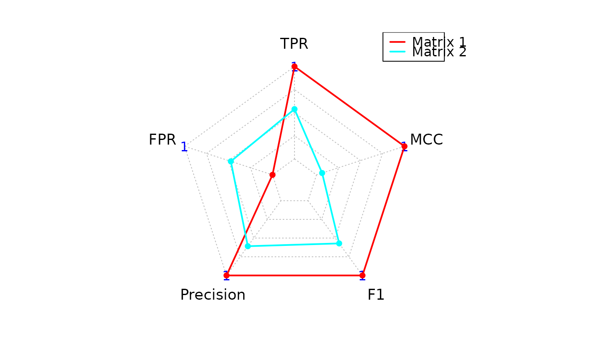

Computes classification metrics by comparing predicted adjacency matrices to a ground truth binary network and visualizes the performance via a radar (spider) plot.
Arguments
- ground_truth
A square binary adjacency matrix representing the ground truth network. Values must be 0 or 1. Only the upper triangle is used for evaluation.
- predicted_list
A list of predicted adjacency matrices to evaluate. Each matrix must have the same dimensions and row/column names as
ground_truth.- zero_diag
Logical. If
TRUE(default), sets the diagonal ofground_truthto zero before evaluation, removing self-loops.
Value
A list with one element:Statistics: Data frame of evaluation metrics (TP, TN, FP, FN,
TPR, FPR, Precision, F1, MCC) for each predicted matrix.
Details
For each predicted matrix, the confusion matrix is computed using the upper triangle (non-self edges). Metrics including True Positive Rate (TPR), False Positive Rate (FPR), Precision, F1-score, and Matthews Correlation Coefficient (MCC) are calculated.
A radar plot is automatically generated summarizing the key scores across matrices.
Examples
# Simulate ground truth and predictions
ground_truth <- matrix(
sample(0:1, 100, replace = TRUE),
nrow = 10
)
diag(ground_truth) <- 0
pred1 <- ground_truth
pred2 <- matrix(
sample(0:1, 100, replace = TRUE),
nrow = 10
)
# Compute scores and generate radar plot
result <- pscores(
ground_truth,
list(pred1, pred2)
)

result$Statistics
#> Predicted_Matrix TP TN FP FN TPR FPR Precision F1
#> 1 Matrix 1 26 19 0 0 1.0000000 0.0000000 1.0000000 1.0000000
#> 2 Matrix 2 14 10 9 12 0.5384615 0.4736842 0.6086957 0.5714286
#> MCC
#> 1 1.00000000
#> 2 0.06400461